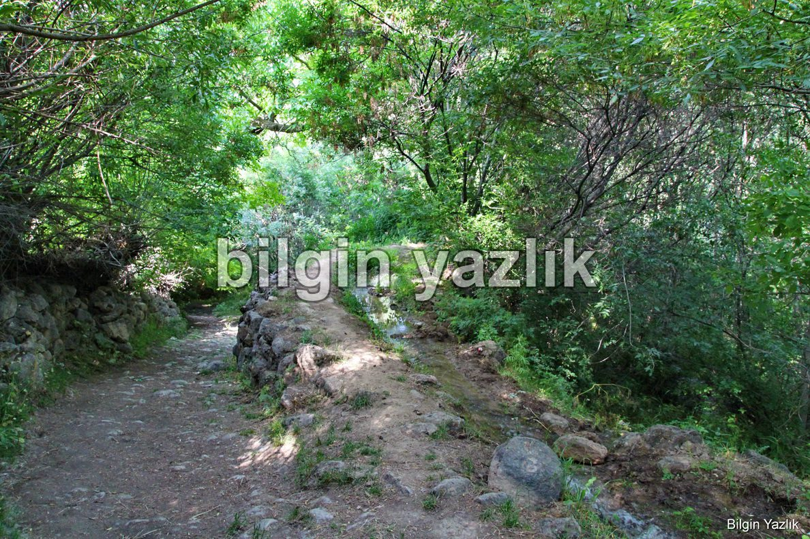
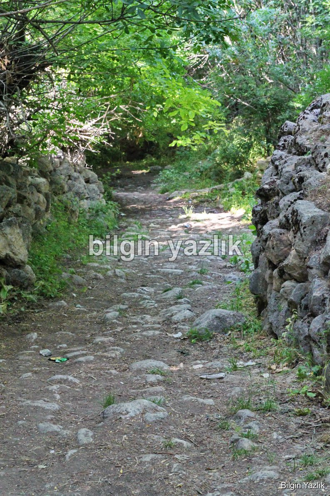
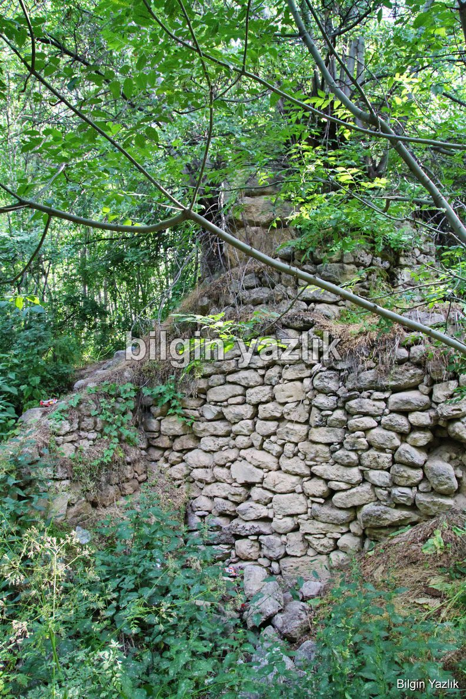
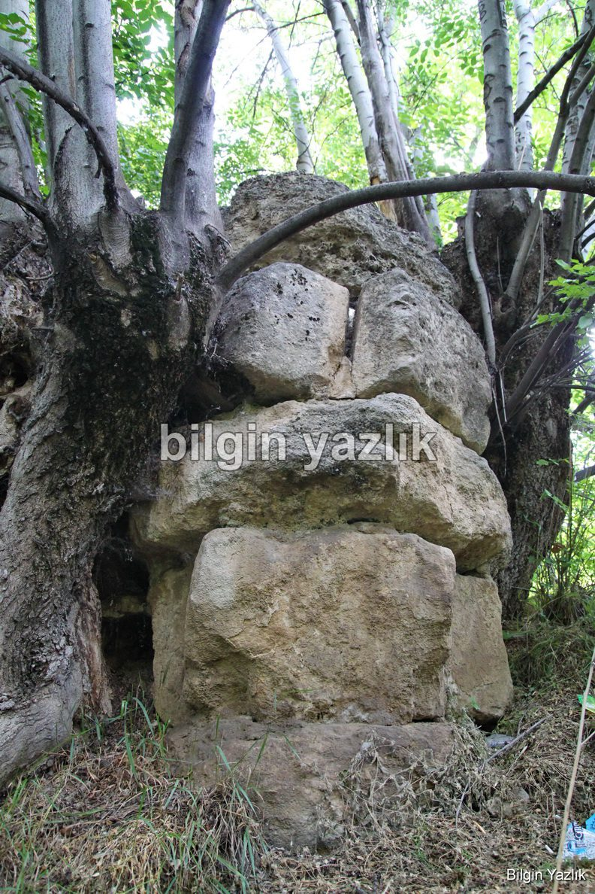
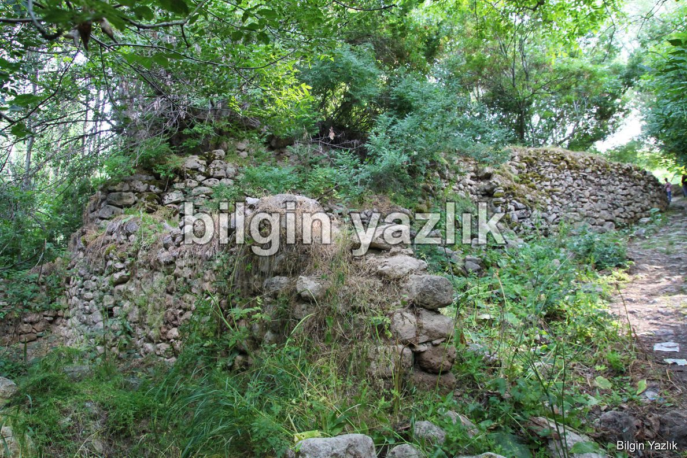
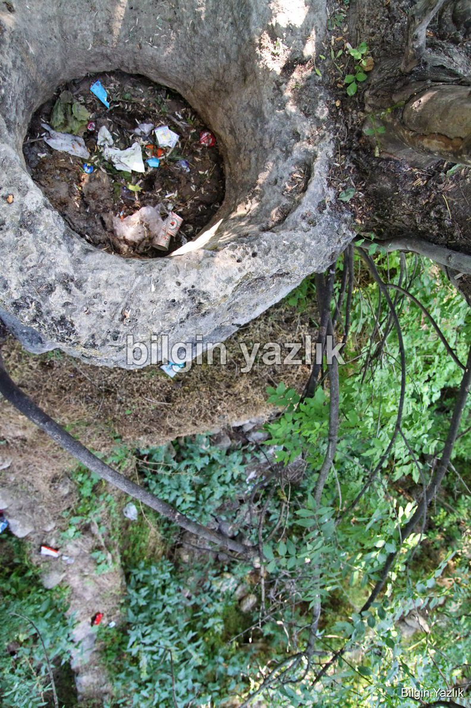

Urartu Değirmeni Mi?
Urartuların devasa taş ocaklarına ev sahipliği yapan şehri Alniunu ile Kral Menua’nın eşi Tariria için kurmuş olduğu ve üzüm bağları ile meşhur Kadembas (Kadembastı) bölgesini birleştiren dünya su mühendisliği harikası Menua (Şamram) kanalı üzerinde Edremit’in iğde kokulu bahçeleri arasında yer alan bu değirmen, büyük oranda harap olmuşsa da günümüze kadar ayakta kalmayı başarmıştır.
Değirmene su taşıyan kanal
Değirmene Menua kanalından su taşıyan kanal ve bu kanalı ayakta tutan taştan örme destek duvarı dimdik ayakta duruyor. Su kanalından değirmen taşına suyu indiren su kanalı da sağlam, bu su kanalı için ayrı bir parantez açmaya değer çünkü büyük blok taşların merkezleri delinerek üst üste bindirilmiş ve bu yolla su kanalı imal edilmiş. Yukarıdan bakınca yaklaşık 4-5 metre aşağıya kadar boşluk görülebiliyor.
Değirmen yanındaki taş yol
Değirmenin öğütme odası, depo odası gibi kısımları tamamen çökmüş durumda, değirmen taşı da muhtemelen bu çökmüş kayaların altında kalmış. Odaların duvarları her ne kadar çökmüş olsa da duvarların taşlar ile örülü temelleri görülebiliyor.
Öğütme odası
Değirmenin hemen yanında doğu batı yönlü taş döşeli bir de yol bulunuyor. Yolun çok eski olduğu taşların yıpranmışlığından anlaşılabiliyor. Muhtemelen bu yol değirmene buğday getirmek ve un götürmek maksadı ile kullanılıyordu.
Dikey su kanalı
Değirmen inşaatında kullanılan taşlar oldukça büyük ve ağır. Urartuların inşa ettiği diğer taş yapılara oldukça benzer özellikler barındıran bu değirmenin bir Urartu yapısı olduğu düşünmek için çokça nedenimiz bulunuyor.
Destek duvarı
Urartu değirmeni diye yazıp konuyu kesip atmak istedim ama olmadı. Her ne kadar bulgular Urartu dönemine işaret etse de kesin bir şey söylemek için kanıt gerekiyor ve net kanıt elimizde yok.
Dikey su kanalı






Bu yazı taliyol arşivinden taşınmıştır. · özgün kayıt